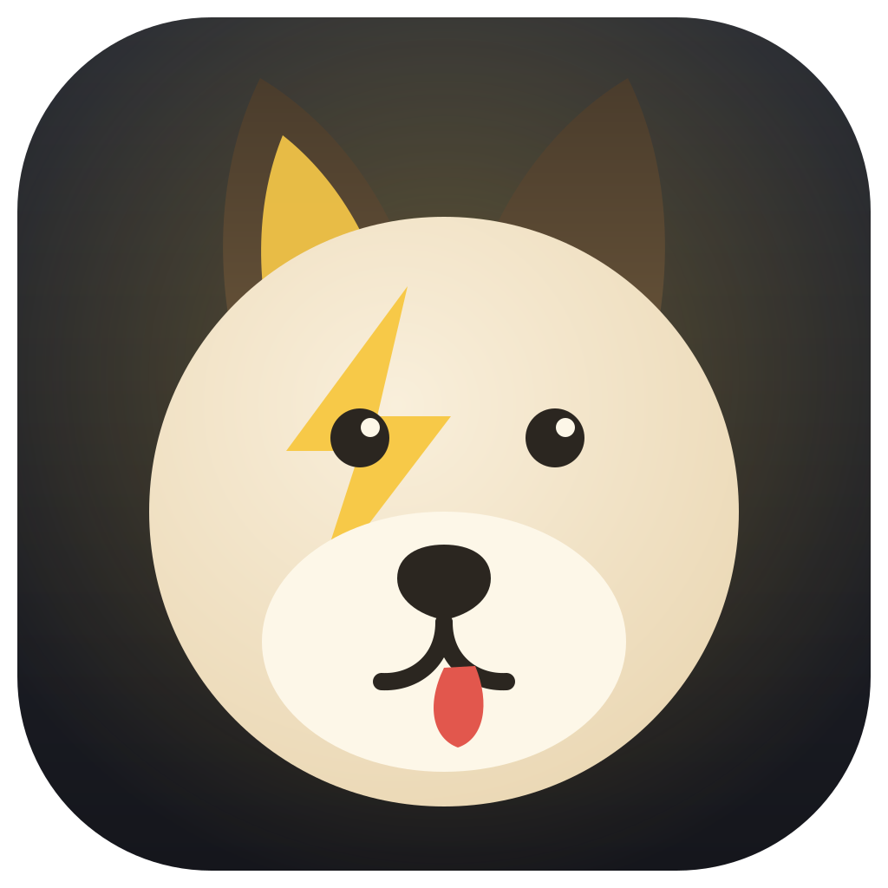

FlashDes années de photos et de vidéos en vrac ? Glisse tes dossiers dans la fenêtre : Flash lit la vraie date de prise de vue et classe tout, numéroté à l'heure près. Les originaux ne bougent pas.
Gratuit · signé et notarisé par Apple · macOS Apple Silicon
EXIF pour les photos, métadonnées pour les vidéos, recoupées avec les dates du fichier pour déjouer les transferts qui les réécrivent. À défaut, la date se lit dans le nom du fichier.
Dossiers et noms composés à ta façon : glisse les morceaux dans l'ordre, choisis le
style, 10 avril 2026, 10 avr. 26 ou 10.04.26.
Chaque fichier a son empreinte : redéposer un dossier déjà traité n'importe rien en double, jamais.
Un fichier sans date fiable attend dans « à vérifier » sous son nom d'origine. Dès qu'un re-dépôt apporte sa vraie date, il rejoint l'album tout seul.
Les photos d'un jour sont numérotées par heure. Un lot plus ancien arrive après coup ? Toute la journée se renumérote automatiquement.
Copie par défaut : tes dossiers sources restent tels quels. Le déplacement, c'est toi qui le décides, avec une case à cocher.
Fais glisser la pellicule, ou clique sur les flèches
Le dossier où Flash construit ton arborescence de souvenirs.
Par milliers s'il le faut. Flash renifle, lit les dates, rapporte.
Année, mois, jour, tout dans l'ordre de prise de vue. Redépose quand tu veux, rien ne se duplique.
Flash travaille entièrement sur ta machine : pas d'IA, pas de serveur, pas de compte, pas de télémétrie. Tes photos ne quittent jamais ton disque.